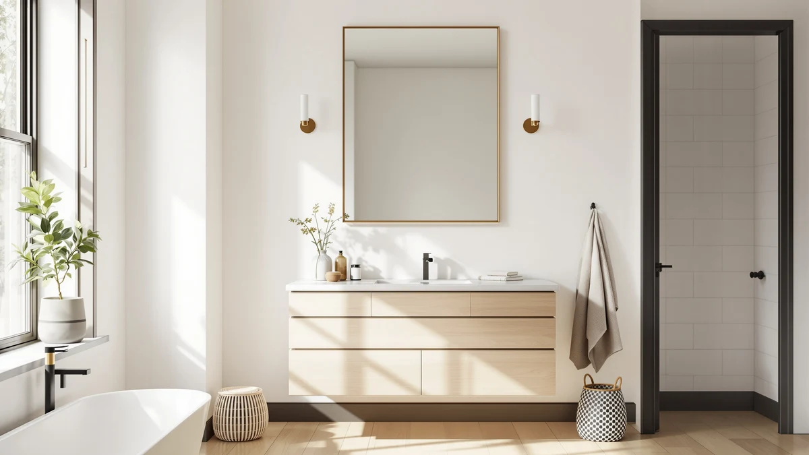

Things to Know Before You Buy
- Width first, height second. A vanity mirror should run 2 to 4 inches narrower than the vanity cabinet, or 70 to 80 percent of its width if you want more visible wall on both sides.
- Mount for the shortest and tallest users. Set the top edge 72 to 78 inches from the floor so a 5-foot user and a 6-foot-4 user both see their full face.
- Leave a gap above the backsplash. Keep 2 to 6 inches between the backsplash and the bottom of the mirror, or water splashes will sit on the glass line and corrode the backing.
- Double vanities usually want two mirrors. A pair sized to each sink looks cleaner than one 60-inch panel, and each mirror costs less to ship and replace.
- Listed size includes the frame. A framed mirror sold as 24x36 inches can hold 2 to 5 inches less glass than a frameless model with the same label.
This mirror sizing guide gives you the numbers that matter before you order: how wide the mirror should run relative to your vanity, how high to mount it, and when a pair of mirrors beats one wide panel. Buy the wrong size and you live with the mistake for years, because few people return a 30-pound sheet of glass over a two-inch error.
Start with one rule. Keep the mirror 2 to 4 inches narrower than your vanity, and set the top edge 72 to 78 inches off the floor. Those two numbers solve the standard single-vanity bathroom. Double vanities, pedestal sinks, and rooms with low ceilings each bend the rule in a different direction, so measure your wall before you fall in love with a shape.
We build sizing recommendations for this site by pairing listed dimensions from mirror listings with the vanity widths US retailers sell most: 24, 30, 36, 48, and 60 inches. If you want a pick without doing the math, the Better Bevel Frameless Rectangle Mirror covers more of those widths than any other mirror we recommend, and the picks section below explains where each option fits.
What You Need to Know
Bathroom mirror sizing runs on two measurements: width relative to the vanity, and height relative to the people using it. For width, the standard is a mirror 2 to 4 inches narrower than the vanity cabinet. A 36-inch vanity pairs with a 32- to 34-inch mirror. That margin frames the glass with a strip of wall on each side, so the vanity area doesn't turn into one solid slab.
Height takes more judgment. Designers center bathroom mirrors 60 to 65 inches from the floor. That puts the middle of the glass at eye level for most adults. In practice, you get more use from the top and bottom edges: set the top edge 72 to 78 inches up so tall users see their whole head, and keep the bottom edge 2 to 6 inches above the backsplash so water splashes hit tile instead of glass.
Scale matters as much as the raw numbers. A 20-inch mirror over a 48-inch vanity looks like a porthole, even though nothing about it breaks a rule. In the other direction, glass that runs wider than the cabinet below it makes the vanity look undersized and puts the mirror edges over open wall, where sconces and outlets tend to live. Match the mirror to the cabinet, not to the wall.
Types and Categories
Rectangles dominate bathroom mirror sizing because they use wall space efficiently. Common stock sizes run 20x28, 24x32, 24x36, and 30x40 inches, and those map onto 24- to 42-inch vanities. If your vanity has an odd width, a rectangle gives you the best odds of finding a close match without a custom order.
Round mirrors trade coverage for style. A circle loses viewing area at the corners, so size a round mirror close to the width you would pick in a rectangle. For a 24-inch vanity, a 20- to 22-inch circle works; anything under 18 inches reads as decor rather than a functional mirror.
Arched and pill-shaped mirrors split the difference, and they suit double vanities well because a matched pair adds shape without crowding the wall. Full-length mirrors follow their own sizing rules: 48 inches of glass shows most adults head to toe when the bottom edge sits within 18 inches of the floor.
LED mirrors and medicine cabinets add depth to the equation. An LED mirror needs a junction box behind it, so its position on the wall is less flexible than its dimensions imply. A medicine cabinet projects 4 to 6 inches off the wall, so in a narrow bathroom it feels bigger than its face size suggests.
How to Choose
Start with a tape measure, not a product page. Record your vanity width, the distance from backsplash to ceiling, and the position of any sconces, outlets, or switches inside that zone. Those three numbers eliminate most of the catalog before you compare a single mirror size.
Work the width first. Subtract 2 to 4 inches from your vanity width for a single-sink setup. On a double vanity of 60 inches or more, decide between one wide panel and a pair: two mirrors sized to each sink, with 4 to 6 inches of wall between them, cost less to ship and give each person a centered reflection. One continuous panel makes a small room feel bigger but weighs more and demands more careful mounting.
Then confirm the height fits your wall. Add your planned mirror height to the backsplash gap and check the total against the space below your sconce or ceiling line. In an older home with 8-foot ceilings and a 36-inch vanity, you have roughly 50 inches of usable wall, and a 40-inch mirror plus a light bar fills it completely.
Finally, read the listing dimensions with care. Framed mirrors list overall size including the frame, so the glass runs 2 to 5 inches smaller than the headline number. Frameless models measure edge to edge. Two mirrors both listed at 24x36 inches can put different amounts of glass on your wall, and the frame width decides which one matches your vanity.
Common Mistakes to Avoid
The most common sizing mistake is buying on looks and measuring after the box arrives. Return shipping on a large mirror often costs $30 to $60 because carriers surcharge glass, and some sellers deduct it from the refund. Ten minutes with a tape measure beats that math.
The second is mounting too high. If the bottom edge sits more than 10 inches above the backsplash, shorter household members lose their reflection below the shoulders. Set heights for the range of people who use the room, not for the tallest adult.
Third, people ignore what shares the wall. A mirror sized correctly for the vanity can still collide with a sconce, a switch plate, or an outlet. Hold a paper template on the wall before you drill; painter's tape and a cardboard cutout catch these conflicts in two minutes.
Fourth, matching the mirror to the room instead of the vanity. Owners of large bathrooms often oversize, figuring the wall can take it. The vanity anchors the composition, and glass that overhangs it looks like a renovation leftover.
And then there's weight. A 30x40 framed mirror can pass 40 pounds, and drywall anchors rated for 20 pounds will not hold it for long. Match the mounting hardware to the mirror weight or anchor into a stud.
Care and Maintenance
A correctly sized mirror still fails early if moisture creeps behind it. The silver backing on a bathroom mirror corrodes where water reaches the edges. The damage shows up as black spots spreading inward from the border. The backsplash gap from our mirror sizing rules earns its keep here: glass that starts above the splash zone stays drier at the bottom edge, where desilvering begins first.
Clean with glass cleaner sprayed on the cloth, not the mirror. Spray hitting the top edge runs down behind the glass and pools against the backing. Microfiber plus a light mist handles toothpaste spatter and fog film; skip abrasive pads, which scratch both glass and frame coatings.
Check the mounting twice a year. Bathrooms cycle between humid and dry daily, and that movement works anchors loose over time, especially on heavier framed mirrors. Give the mirror a light tug at the bottom corners; any shift means the anchors need attention before the mirror needs a broom.
For LED mirrors, keep the sealed edges sealed. Aftermarket frames or adhesive hooks applied to the glass can break the moisture barrier that protects the wiring, and water in the channel kills the lighting long before it harms the glass.
Our Top Picks
The sizing rules above apply to any mirror. These three picks cover the situations readers ask about most: a standard single vanity, a full-length check, and a frameless panel with simple edge-to-edge math.

Editor’s Pick
Better Bevel Frameless Rectangle Mirror
Sized for the 30- to 36-inch vanities most US bathrooms have, with a beveled edge that finishes the glass without adding frame width to the listed dimensions.
$75.24
Check Price on Amazon
Best Value
Delma Wall Full Length Mirror
A budget full-length mirror for the head-to-toe check a vanity mirror cannot give you, and at $35.99 it costs less than many vanity mirrors half its size.
$35.99
Check Price on Amazon
Premium Choice
Frameless Bathroom Mirror for Wall
A frameless rectangle whose listed dimensions equal the glass edge to edge, so the frame allowance drops out of your sizing math.
$59.99
Check Price on AmazonFrequently Asked Questions
What size mirror should go over a 36-inch vanity?
Pick a mirror 32 to 34 inches wide, which leaves an inch or two of visible wall on each side of the glass. For height, 32 to 40 inches suits most walls. Drop to 30 inches wide if you plan to add side sconces.
How high should a bathroom mirror hang?
Set the top edge 72 to 78 inches from the floor and keep the bottom edge 2 to 6 inches above the backsplash. That range centers the glass near eye level, about 60 to 65 inches, for adults between 5 feet and 6 feet 4.
Can a mirror be wider than the vanity?
Keep the mirror at or below the vanity width. Glass that overhangs the cabinet makes the vanity look undersized and pushes the mirror edges into sconce and outlet territory. On a double vanity, run the mirror to within an inch of full cabinet width instead of past it.
What size round mirror fits a 24-inch vanity?
Choose a 20- to 22-inch diameter. Round mirrors lose viewing area at the corners, so size them close to the width you would pick in a rectangle. Under 18 inches, a circle reads as wall decor and forces you to lean in to shave or apply makeup.
Should a double vanity get one mirror or two?
Two mirrors, one centered over each sink, work better on vanities of 60 inches or more. Each person gets a centered reflection, and replacing one costs half as much if it breaks. Use a single wide panel when the sinks sit close together or you want the room to feel larger.
Verdict
This mirror sizing guide comes down to three numbers you can capture in ten minutes: your vanity width, your backsplash-to-ceiling clearance, and the top-edge height that serves everyone in the house. Buy a mirror 2 to 4 inches narrower than the vanity, set the top edge between 72 and 78 inches, and leave a gap above the backsplash. Those rules handle a standard bathroom without further debate, and the sections above cover the double-vanity and round-mirror exceptions.
Among the mirrors we recommend, the Better Bevel Frameless Rectangle Mirror remains the easiest to size because its frameless build means the listed dimensions equal the glass you get, and its available widths line up with 30- and 36-inch vanities. The Delma covers the full-length check for $35.99, and the Ruomeng frameless panel suits buyers who want edge-to-edge math with no frame allowance. Measure first, then pick the shape, and the mirror will look built for the room rather than bought for it.